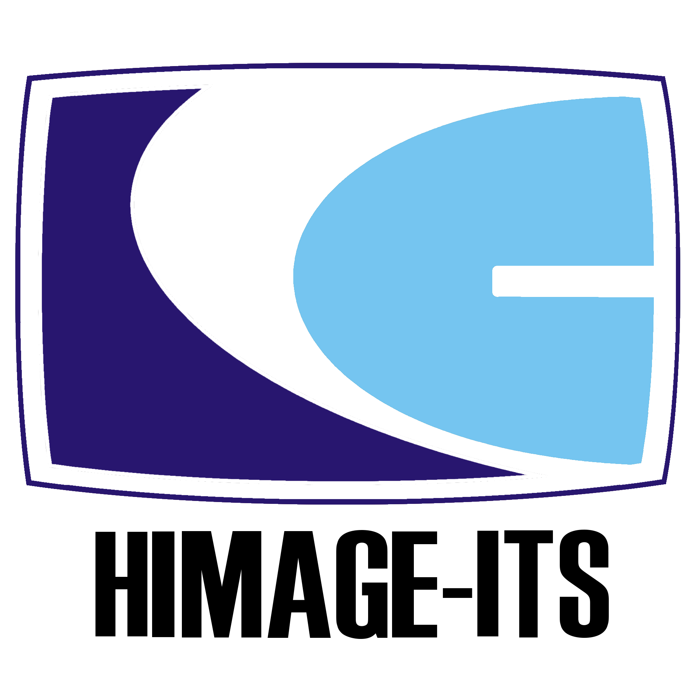
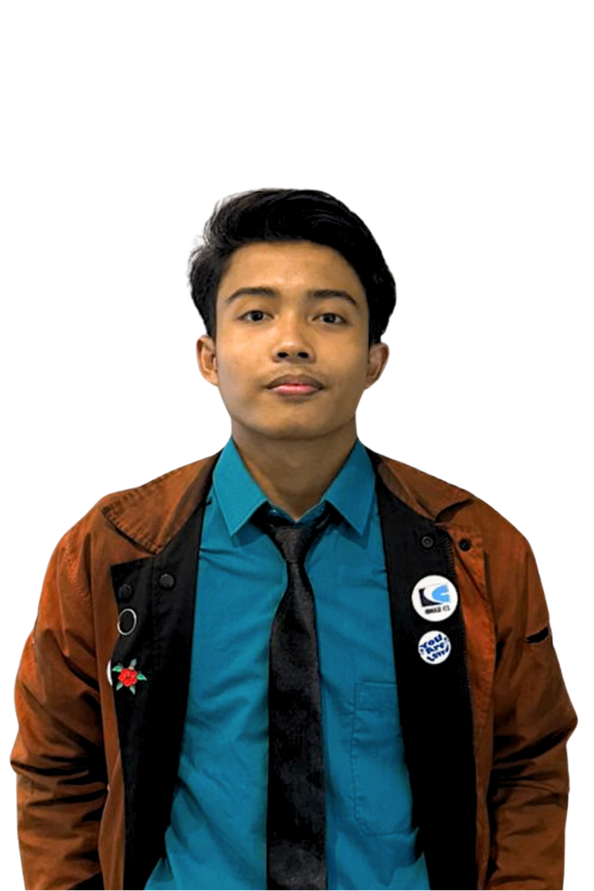

Memuat HIMAGE ITS...
Himpunan Mahasiswa Teknik Geomatika ITS merupakan wadah bagi mahasiswa untuk mengeksplorasi informasi dan inovasi agar dapat berkembang dan berprestasi secara selaras.
Departemen Teknik Geomatika ITS
ini visi
Arah Gerak HIMAGE
Di balik jalannya program kerja dan visi yang terstruktur, terdapat jajaran pengurus yang berdedikasi tinggi. Kenali susunan pengurus HIMAGE-ITS lebih dekat.
Lihat Fungsionaris →
Calon Ketua Himpunan
Calon Wakil Ketua Himpunan Eksternal
Klik salah satu kartu program kerja di bawah untuk melihat penjelasan lengkap, penanggung jawab, dan dokumentasi kegiatan.
Profile HIMAGE ITS
Mengarahkan langkah HIMAGE ke masa depan yang lebih terstruktur dan berdampak luas.
Makna di balik setiap elemen logo sebagai identitas dan nilai luhur HIMAGE ITS.
Perjalanan HIMAGE dari awal berdiri hingga menjadi organisasi yang solid hari ini.
Jadwal lengkap kegiatan akademik, perkuliahan, serta agenda penting kemahasiswaan.